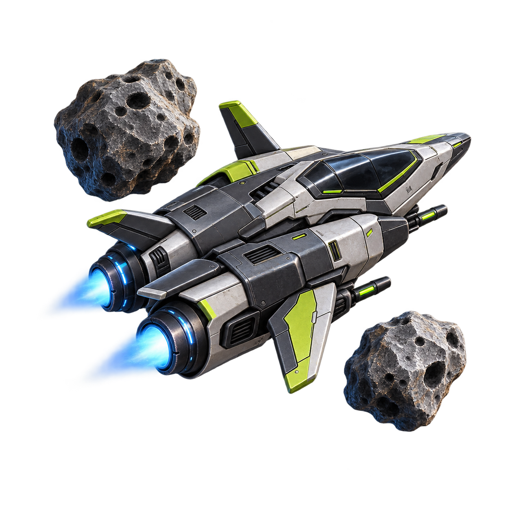
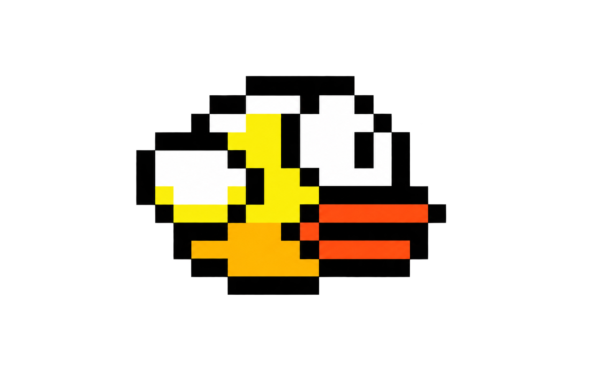
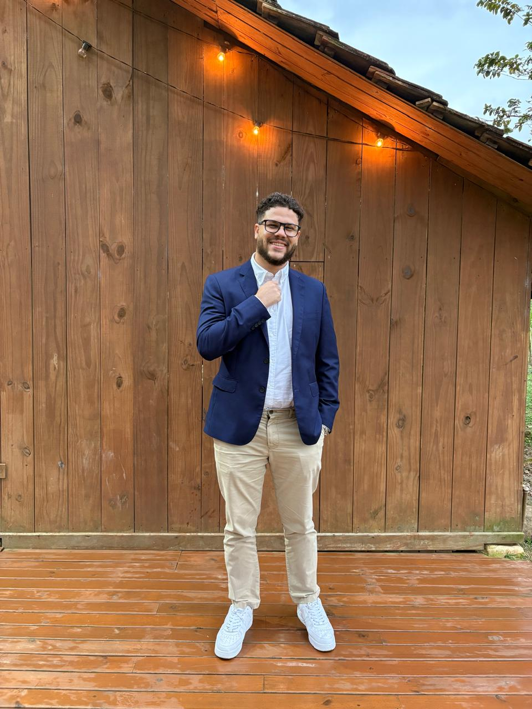

GODOT 4 / GDSCRIPT01
ASTEROIDSARCADE / SPACE / SURVIVAL
WAVES · BOSSES · SPECIAL ABILITIESV3
Asteroids
A space arcade game with ship selection, progressive waves, boss battles, shields and special attacks.
I turn business processes into digital solutions.
Solutions & Implementation Analyst · BPMN Specialist
Personal projects across games, mobile and the web.
A different problem. A new way to build.

A space arcade game with ship selection, progressive waves, boss battles, shields and special attacks.
A full-stack travel platform, connecting frontend experiences with backend services.
A Pokémon discovery project built with Flutter, exploring interfaces and data integration.
An educational adventure combining platforming, combat and challenges about simple and compound interest. Developed as an academic project for PAC5.

A recreation of the classic arcade game, developed in Godot as a learning project. Keep flying, dodge the pipes and beat your best score.

27 years old · Joinville, Brazil
Understanding the problem is only the beginning. I also build the solution.
With more than ten years at SoftExpert, I work across requirements analysis, process modeling, solution design, commercial proposals, development and implementation.
BPMN is my specialty. SQL, REST APIs, workflows, forms and integrations help me turn that thinking into working digital solutions.
I’m studying Software Engineering at Católica de Santa Catarina and expanding my practice through web, mobile and game development. Having lived in the USA for seven years, I use my native-level English in technical communication and international projects.
My professional background on LinkedInDiscovery · Requirements analysis
Business rules · Process mapping
BPMN · Workflows · Forms
SQL · REST APIs · Integrations
Solution development
Implementation · Client collaboration
Selected client projects from my work at SoftExpert.
From business requirements to implementation.
I led the project end to end, from budget preparation and on-site discovery in Bragança Paulista, São Paulo, through documentation, requirements analysis, solution development, and implementation.
The solution automated the entire production workflow, covering machine material supply and monitoring, Data Matrix label scanning and decoding, REST API integrations with TOTVS for inventory updates, raw material production control, and product dispatch.
I also developed management dashboards and performance indicators, providing end-to-end visibility into the production cycle, from replenishment through dispatch.
Automation of quality-management workflows, including Nonconformity Reports (NCRs) and processes for investigating and resolving issues.
Implementation of a risk-management module using a GRC solution to identify, mitigate, treat and control risks.
The project also included requirements-analysis and audit-management solutions, with the Audit and Analytics modules supporting audits, reporting and management indicators.
Development and implementation of a robust item-management solution using Product Data Management (PDM) for United States defense contractor General Dynamics.
The solution also supported inventory monitoring and included a management portal developed using Analytics.
Development of a corporate training-management solution using SoftExpert’s native Training Module, including the import of more than 30,000 records into the system.
Mapping of all training requirements by department, job role and corporate document.
The project also included an Enterprise Content Management (ECM) solution for corporate document management.
More than a decade of growth at SoftExpert,
from technical communication to complete solutions.
Technical documentation and Portuguese–English translation.
Training scripts, presentations and videos in Portuguese and English.
Consulting and implementation for Brazilian and international clients.
Process analysis, BPMN, automation and development.
From the first client conversation to the implemented solution.
I’m also drawn to the other side of the screen: films, directing and screenwriting.
Different tools. The same curiosity about how an idea becomes an experience.
Games inspire me to be creative, explore different perspectives and immerse myself in new cultures and stories. That curiosity also shapes how I approach problems and build solutions.
Explore my favorite gamesProcesses, technology, projects or cinema. Find me where the conversation continues.